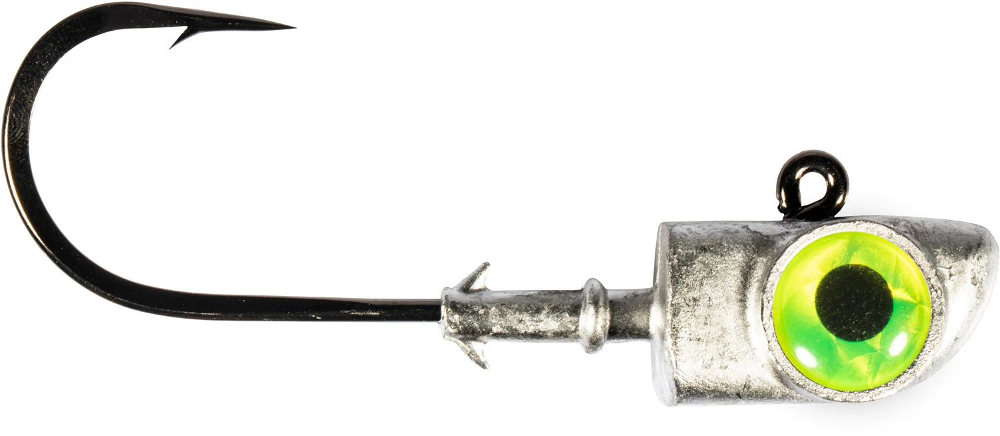

{kind=link}
Hooking Eyeballs on Social
How write blog posts people will read
Lede
Don't Google "Hooked Eyeball Injury" but instead ask yourself: why did bloggers (and now, social media posters) speak of hooking eyeballs?
Obviously, before a blog reader or social media user decides whether to read a post, they first need to notice it and decide they care about it. The image, title and lede of the post must grab the interest of those who will read the rest - and if it is sufficiently engaging, like, comment, and boost traffic.

Blog History
Nothing is Free
Time is money (if you weren't reading this blog, you could be making money doing something else) and attention can be bought (and sold).
Advertisers might, for example, put an ad for fishing lures here, because the hero image of the post and the concept of eyeballs and hooks made them think it would attract fishermen.
Sticky Flowers
Bloggers who initially thought that their knowledge and opinions would be enough to build a following quickly learned that posts were like flowers: they had to attract attention from bees flying by and get them to land, then get them to walk around inside to stick pollen to the bees' legs.
In blog and social media post language, a post is "sticky" if it gets people to stay and engage with it. If people see the page, scan briefly, and then leave before spending time there, they have "bounced". Which of these two posts would you more likely stick to, and which would you bounce from?
How to Become an Influencer
Want to build traffic to your blog or followers to your social account? Follow three rules with every post:
- Hook eyeballs so they stop and read with:
- An eye-catching image
- A matching headline (title)
- Engage readers with a short lede paragraph:
- Tie the image and title to a reader's interest.
- Shift into what you want to write about.
- Be sticky, not bouncy:
- Don’t be clickbaity (break a promise made by the hero image, title and lede by writing about something different). They'll bounce (leave the page).
- Don’t bore readers with too many details too soon, or hit them with a wall of text (which few readers will dive into).
- Stay "sticky" with a blend of text, lists and images that feel valuable and keep them reading.
If your readers stay to the end, harvest that traffic: prompt for comments with a specific question. Make it easy for readers to want to say something in response.
What Do You Think?
Was this post a good example of the three rules? Where did it fall short? Leave a comment below where you rate the Hook, the Lede, and the Stickiness of the post – or better yet, share an example of your own post where you follow these rules! Show us how it's done.